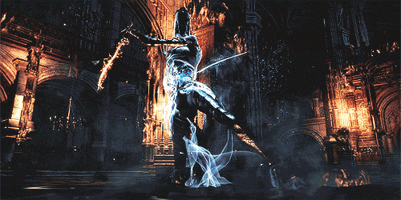

Tu camino es el camino de un cazador. Vives por la caza y morirás por ella. Toda presa que pruebe ser digna deberá enfrentarse al filo de tus espadas gemelas.
Y es así como terminaste entre cenizas y escombros: tu presa pudo escapar. Un demonio de fuego, un contrincante raro y casi extinto, se alzó frente a ti.
El monstruo vomitaba flamas y partía chozas con su hacha, creando estragos por donde fuera; el daño colateral era enorme. Pero no eres ningún héroe.
No salvas vidas ni las proteges. Tú eres un cazador. Con eso claro en tu mente, te sacudes la ceniza y envainas las espadas para poder seguir a tu presa; este será un buen trofeo…
